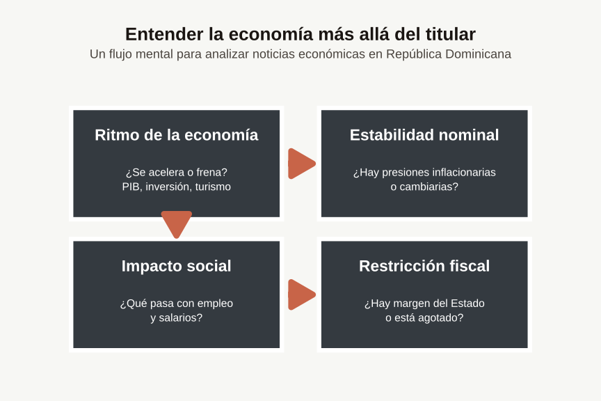

Gráfico #0: Cómo leo la economía dominicana
La República en un gráfico
Metodología
Un primer mapa visual de cómo organizo mentalmente los datos de la economía dominicana.
Para entender la economía sin perderse, hace falta un mapa. Este primer gráfico no busca probar una teoría compleja, sino transparentar cómo organizo mentalmente la economía dominicana cada vez que me enfrento a una nueva base de datos.
La idea es tener, en una sola imagen, los pilares fundamentales: los sectores que mueven la aguja, el papel decisivo del sector externo (turismo y remesas) y las conexiones invisibles que terminan en los titulares de prensa: inflación, dólar y deuda.
“Cuando escucho una noticia económica sobre RD, ¿qué casillas de mi mapa mental se prenden primero?”
• • •
Qué muestra
Este diagrama organiza mi lectura de la economía dominicana en cuatro preguntas que siempre intento responder cuando analizo datos:
1. ¿Se acelera o se frena? Aquí miro el ritmo: PIB, IMAE, inversión, turismo. Si la economía acelera, otras variables empiezan a moverse.
2. ¿Hay presiones inflacionarias o cambiarias? La estabilidad nominal importa: si el dólar sube 8% en tres meses, eso afecta precios, salarios reales y decisiones de inversión.
3. ¿Qué pasa con empleo y salarios? El impacto social: el crecimiento agregado no garantiza progreso si no llega a los bolsillos o si genera empleo precario.
4. ¿Hay margen del Estado o está agotado? La restricción fiscal: déficit, deuda, recaudación. Si el espacio se agota, las respuestas contracíclicas desaparecen.
Estas cuatro cajas no están aisladas: se conectan. Un shock externo (digamos, petróleo caro) puede afectar las cuatro simultáneamente.
Cómo lo uso en la práctica
Caso Práctico: Inflación
El Escenario: Sale una noticia urgente diciendo: “La inflación subió a 4.8% en noviembre”.
Mi flujo mental:
1. ¿Ritmo? → Chequeo el IMAE del mismo mes. ¿Hay un aumento en la demanda o es por el lado de la oferta?
2. ¿Estabilidad? → Miro el dólar. ¿Se depreció recientemente? ¿Hay traspaso a precios?
3. ¿Impacto? → Busco el índice de salarios. Si crecieron solo 2% y la inflación fue 4.8%, hay pérdida de poder adquisitivo.
4. ¿Fiscal? → Reviso decisiones administrativas. ¿Hubo ajuste de combustibles o tarifas públicas que expliquen el salto matemático?
Ese recorrido me da un diagnóstico más completo que solo repetir el titular.
Qué no muestra
- No es una contabilidad completa ni un modelo formal.
- No captura todas las instituciones, ni toda la historia, ni todas las fricciones.
- No debe leerse como “la única forma correcta” de ver la economía, sino como el mapa que yo uso para orientarme.
La Implicación para el Blog
A partir de ahora, cada vez que publique un análisis de coyuntura, estará anclado a este esquema. Mis lecturas siempre intentarán conectar Dato → Mecanismo → Implicación, evitando quedarme en la simple opinión sobre el titular del día. Este mapa es el filtro por el que pasarán los números.
• • •
¿Usas un mapa mental parecido? Cuéntame en los comentarios.
Nota: Los próximos gráficos explorarán cada caja de este diagrama en detalle.